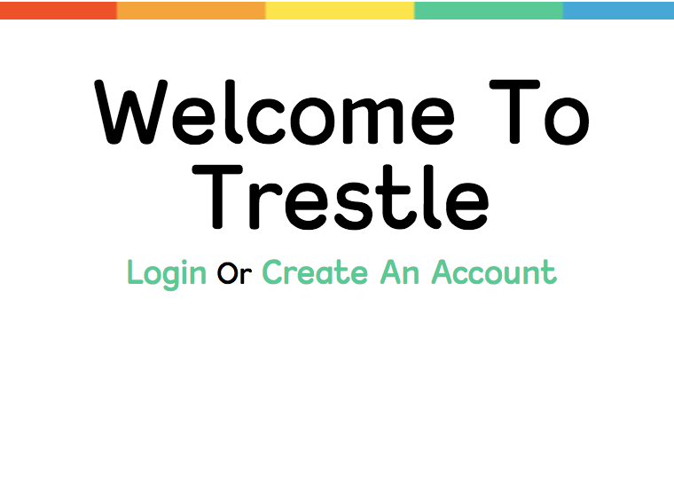
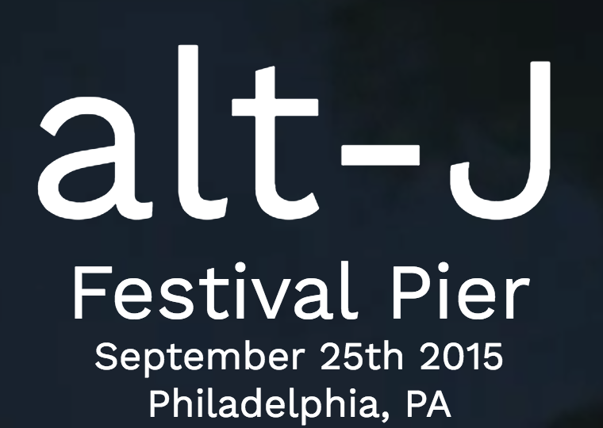

Work
Trestle
Trestle was built with Express, Node and Mongodb and used Handlebars as the view engine. Mongoose schemas were used to create models for users and strategies and were saved to the mongo database. Trestle is live and deployed to heroku you can register a user and login and explore other parts of Trestle.
View SiteAlt J Interactive Site
The alt-J site was meant to advertise a concert or an event. The icons are svgs that were created in Adobe Illustrator, the pause and play buttons toggles the music that plays with javascript.
View SiteHappy Sunshine
Happy Sunshine was built as a mobile only app and is best viewed on a small screen.Happy Sunshine was built using the Foundation framework with some added custom styling. It also uses javascript and jQuery to login and register users thorugh localstorage and a cart feature that adds items and also removes them. You will need to register an account to use.
View Site